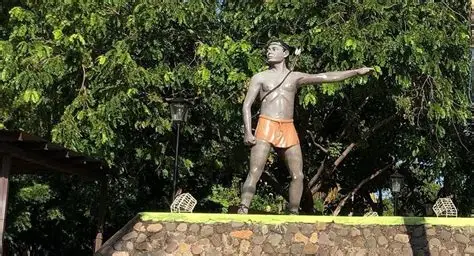
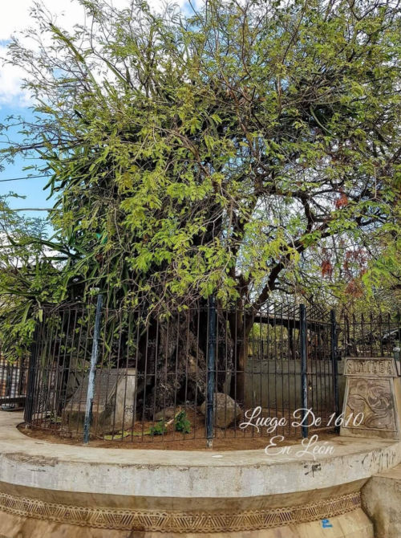

Resistencia indígena y defensa de la identidad en el siglo XVI
El cacique Adiact es una figura representativa de la resistencia indígena en el territorio que hoy conocemos como Nicaragua. Su nombre forma parte de la memoria histórica vinculada a los primeros años de la invasión española en el siglo XVI. Aunque las fuentes documentales coloniales son limitadas y muchas veces redactadas desde la perspectiva de los conquistadores, la tradición histórica reconoce en Adic a un líder que defendió la autonomía y la dignidad de su pueblo.
Su liderazgo se desarrolló en una época de profunda transformación social, política y espiritual para los pueblos originarios. La llegada de los europeos alteró completamente el equilibrio de las sociedades indígenas, imponiendo nuevos sistemas de poder, explotación económica y dominación cultural.

En 1522, el explorador español Gil González Dávila realizó incursiones en el territorio nicaragüense. Poco tiempo después, Francisco Hernández de Córdoba fundó ciudades como León y Granada, consolidando el proceso de colonización española.
Este proceso trajo consigo el sistema de encomiendas, mediante el cual los indígenas eran obligados a trabajar para los colonizadores y a entregar tributos en oro, alimentos y mano de obra. Además, la evangelización forzada buscó transformar las creencias y prácticas espirituales indígenas.
Las estructuras tradicionales de autoridad fueron debilitadas, y muchos caciques se vieron obligados a decidir entre colaborar con el nuevo poder o resistirlo. En este contexto complejo y peligroso emergió el liderazgo de Adiact.
El espíritu luchador de Adiact no se limitó a un acto aislado de rebeldía. Fue una postura firme frente a la dominación extranjera. Su negativa a someterse representaba una defensa integral del territorio, la cultura y la organización social de su comunidad.
En las sociedades indígenas del occidente nicaragüense, el cacique era más que un jefe militar: era guía espiritual, mediador político y protector del equilibrio comunitario. Defender su pueblo significaba proteger su cosmovisión, su relación con la naturaleza y sus tradiciones ancestrales.
Oponerse a los españoles implicaba riesgos enormes: represalias violentas, destrucción de aldeas, esclavización y castigos ejemplares. Sin embargo, Adiact optó por sostener la dignidad antes que aceptar la subordinación.
La resistencia indígena no siempre se expresó en grandes batallas registradas en crónicas. Muchas veces se manifestó a través de la negativa a pagar tributos, la reorganización estratégica de comunidades, el repliegue hacia zonas menos accesibles y la preservación cultural frente a la opresión.
Esta resistencia cotidiana permitió la supervivencia de elementos fundamentales de la identidad indígena pese a la violencia del sistema colonial. En ese sentido, el legado de Adiact simboliza esa firmeza silenciosa, constante y profundamente significativa.
Según la tradición histórica, el cacique Adiact fue capturado y ejecutado por resistirse al dominio español. El sitio conocido como "El Tamarindón" se asocia con su muerte y se ha convertido en un símbolo de memoria y reflexión histórica.

Más allá del hecho puntual, este lugar representa la lucha por la autonomía y la dignidad. Recordar a Adiact es reconocer que los pueblos originarios no aceptaron pasivamente la colonización, sino que enfrentaron con valentía uno de los periodos más difíciles de su historia.
Hoy, la figura del cacique Adiact forma parte de la memoria colectiva nicaragüense. Su nombre evoca resistencia, liderazgo y compromiso con la comunidad.
Recuperar su historia significa reconocer el papel activo de los pueblos originarios en la construcción de la nación. Su espíritu luchador no pertenece únicamente al pasado, sino que inspira la defensa contemporánea de la identidad cultural, los derechos indígenas y la autonomía comunitaria.